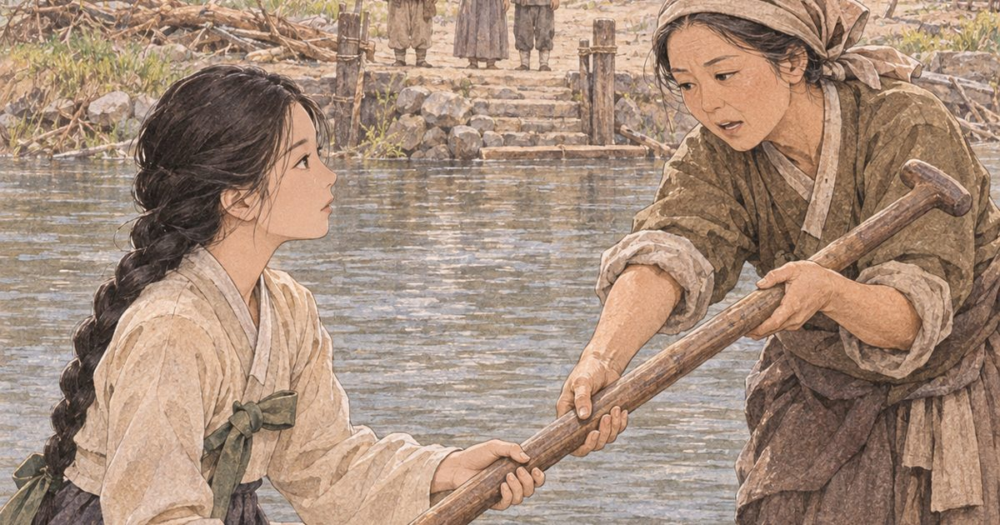

호적에 없는 봄
조선 후기를 배경으로 한 한국어 선택형 인터랙티브 만화 · 시즌 1~3

이야기
조선 후기 여천. 큰물이 마을을 휩쓸고 지나간 뒤, 열일곱 살 이서의 이름은 호적에서 사라졌다. 어머니는 아이들을 배에 태우다 돌아오지 못했고, 이서에게 남은 것은 동생 단오와 어머니의 바느질 상자, 그리고 구휼소 장부에 칼로 긁혀 나간 한 줄뿐이다.
쌀을 받으러 간 날, 담 뒤에서 기다리던 아이 소복이 이서를 부른다. 관아가 물에 빠져 죽었다고 적은 아이 연이가 장례 다음 날 쌀자루 옆에 앉아 있었다는 것이다. 살아 있는 아이가 왜 한양의 사망 기록에 올라 있는지, 연이의 이름으로 묻힌 아이는 누구였는지가 세 시즌을 잇는 질문이다.
장면 맛보기
소복 “언니네 어머니 장례 다음 날, 연이가 이 자루들 옆에 앉아 있었어요. 관아에서는 물에 빠져 죽었다고 했는데요.”
이서 “물이 번졌으면 종이부터 얼룩졌겠죠. 여긴 제 줄만 긁혔어요.”
이서는 장부의 빈 줄을 따라 뱃사공, 떠나려는 유모, 기록을 고친 서리를 차례로 만난다. 누구의 말을 먼저 믿을지, 어떤 종이를 누구 이름으로 낼지는 독자가 고른다.
시즌 안내
- 시즌 1
- 여천 이야기 — 홍수 뒤의 여천. 다섯 번의 선택이 이서의 첫 신분과 손에 쥔 단서를 정하고, 이어지는 여덟 번의 심리에서 신분이 오르내린다. 노비·상민·양민·중인·양반·왕족마다 같은 사건을 다른 증거와 사람으로 만난다.
- 시즌 2
- 궁문까지 — 시즌 1에서 정해진 신분 그대로 한양으로 떠난다. 역참 부엌의 명선, 돌아가라는 편지를 들고 온 서겸, 날짜를 겹쳐 적은 하 서리. 누구와 동행하고 어떤 자료를 누구 이름으로 내는지에 따라 닫힌 궁문 앞의 장면이 달라진다.
- 시즌 3
- 문 안의 이름 — 궁문이 열리는 순간부터 시작한다. 최 상궁, 기록관 윤석, 의관 이현, 침방 나인 채령이 각자 아는 만큼만 말하고, 조 판관 앞에서 연이의 기록을 고칠지가 정해진다.
주요 인물
- 이서 — 호적에서 지워진 주인공. 장부의 빈 줄과 사람들의 기억을 맞춰 본다.
- 단오 — 이서의 동생. 누나 대신 먼저 대답하려 하지만, 자기 이름이 적힌 명부 앞에서는 자기 말을 하고 싶어 한다.
- 소복 — 연이를 본 아이. 어른들이 믿지 않아도 버선의 푸른 매듭으로 설명하려 한다.
- 연이 — 여천에 살아 있지만 한양 기록에는 죽은 사람으로 올라 있다.
- 옥례 · 백문재 · 박 유모 — 나루의 뱃사공, 수결을 남긴 서리, 어머니의 편지를 맡아 온 유모.
- 명선 · 서겸 · 최 상궁 · 조 판관 — 한양 가는 길과 궁 안에서 기록을 열지 덮을지 묻는 사람들.
읽는 방법
컷을 넘기다 질문이 나오면 선택지 가운데 하나를 고른다. 선택은 다음 컷의 대사, 등장하는 사람, 손에 남는 자료를 바꾸고, 시즌이 바뀌어도 신분과 단서, 함께 온 증인이 이어진다. 한 화면에 한 컷씩 넘겨 보며(버튼·좌우 밀기·화살표 키), 원하면 스크롤로 한 번에 볼 수도 있다. 진행은 이 브라우저에 자동으로 저장된다.